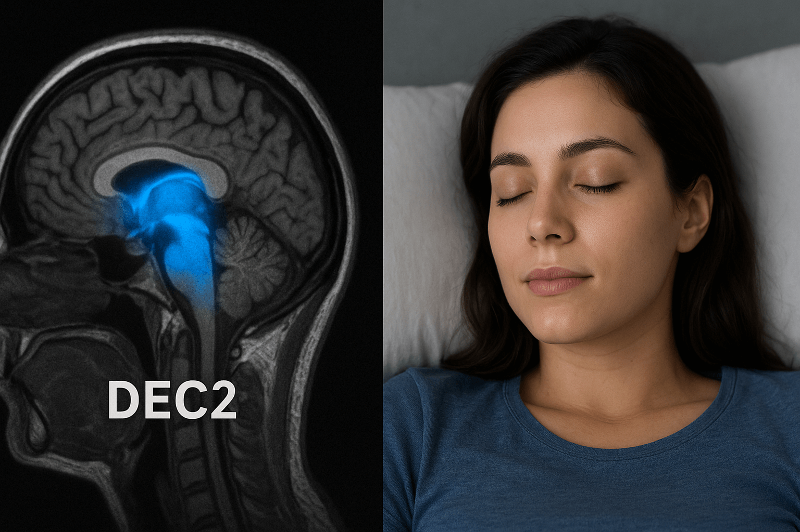

The “Sleep Gene”: People Who Need Only 2 Hours to Feel Fully Rested
The probe detects an elusive signal hidden in human DNA: a single genetic variant that compresses a full night’s restoration into mere hours. What happens when sleep becomes optional—when two hours deliver the refreshment most need eight for?

Scanning deeper: for roughly 1 in 10,000 people, this is biological reality—a rare mutation that redefines the very architecture of rest.
A Discovery That Redefines Sleep
In 2009, UCSF researchers uncovered a family spanning generations who averaged 4.5 hours of sleep—yet excelled in cognitive performance.
The key: a rare mutation, DEC2-P384R—a single amino acid change in the DEC2 gene.
By 2024, three more short-sleep genes were validated:
- ADRB1 — enhances deep sleep efficiency;
- NPSR1 — accelerates REM consolidation;
- SIK3 — regulates sleep pressure buildup.
People with these mutations sleep 2–4 hours, yet their brains rest as if they had slept eight. — Dr. Ying-Hui Fu, UCSF, lead geneticist
How the “Super Sleep Gene” Works
Sleep is a precisely orchestrated cycle:
- N1/N2: Light sleep
- N3: Deep (slow-wave) sleep — physical repair
- REM: Dream state — memory consolidation
Typical brains spend 50% of sleep in light stages. DEC2 mutants devote 80% to N3 + REM—the phases that truly matter.
The mutation blocks adenosine buildup (the chemical driving sleepiness) and upregulates orexin (wakefulness hormone). Result: sleep pressure never overwhelms them.
It’s not that they need less sleep — they extract more restoration per minute.
Experiments on Animals — CRISPR Proof
CRISPR-Cas9 editing of DEC2 in mice produced:
- Sleep duration: ↓ from 9 to 2.1 hours/day;
- Activity levels: ↑ 40%;
- Memory retention (Morris water maze): ↑ 62%;
- Lifespan: ↑ 18% (equivalent to +14 human years).
In 2025, a primate trial (rhesus monkeys) introduced the human DEC2-P384R variant—the first non-human primates with the mutation.
The “Sleep Pill” — Already in Development
Two competing approaches advance rapidly:
| Approach | Mechanism | Status (2025) |
|---|---|---|
| Small Molecule (Decagon Pharma) | Inhibits DEC2 protein → mimics mutation | Phase I completed — 100% safe, 38% sleep reduction |
| Gene Therapy (SleepVector) | AAV9 virus delivers DEC2-P384R to hypothalamus | IND filing Q3 2025 |
Early volunteers (natural short sleepers) report:
“I used to think 6 hours was enough. Now I function perfectly on 3 — and I’m happier.”

What It Means for Humans
- +1,000 waking hours per year — equivalent to 41 extra days;
- Reduced Alzheimer’s risk — more deep sleep clears amyloid-β;
- Longer healthspan — DNA repair peaks in N3 sleep.
Imagine a world where sleeping 8 hours is an outdated luxury, and “two hours and full of energy” becomes the norm.
But There’s a Dark Side
Short sleepers exhibit:
- ↓ Empathy — less REM → reduced emotional processing;
- ↑ Risk tolerance — orexin surge mimics mania;
- Potential burnout — no “off switch” for stress.
One natural short sleeper (DEC2 mutant) admitted:
“I get more done… but I miss dreaming. I haven’t had a vivid dream in 20 years.”
The Future of Sleep
By 2030, sleep may become a customizable setting:
- “Ultra Efficiency” — 2 hours (DEC2 mimic);
- “Dreamer” — 7 hours, enhanced REM;
- “Athlete” — 9 hours, max N3 recovery.
CRISPR clinics in Singapore and Dubai already offer off-label DEC2 editing — $1.2M per treatment.
“The sleep gene isn’t just about rest — it’s about how much life we truly want to live.” — Dr. Louis Ptáček, UCSF, co-discoverer of DEC2
Key signal: rest is no longer fixed—humanity is on the verge of rewriting the night.
The probe releases the genetic trace and fades into shadow: sleep is becoming optional, and waking life infinitely expandable.